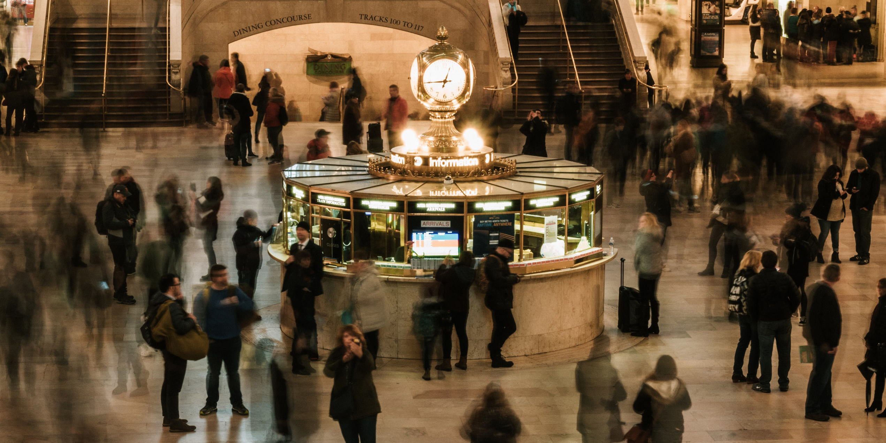

Instruction Sets for Strangers I, II & III
Three site-sepecific public installations were created at our chosen location, the Whispering Gallery at the Grand Central Terminal.Through collaborative work between Dita Zanelli, Hongxi Chen, Natalie Alvarenga and Ruihan Xia, the artists group were abble to create three uniqueand independent installation work that shares common purposes: catching eyes, satisfying people’s curiosity, urging busy New Yorkers to stop by and entertaining visitors and tourists from all over the world. Our goal is to create public art with no instruction provided, but still encourage strangers to interact with it.
